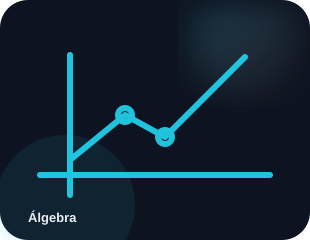

CONTINUAR
Pronto para a próxima sessão?
Quando você abrir um tópico, ele aparece aqui para facilitar a retomada.

Matemática · ÁlgebraComeçar do primeiro tópico→Escolha uma matéria, entre em um tópico e estude no seu ritmo. O VETOR organiza conteúdo visual, prática e curiosidades em uma experiência feita para funcionar bem no celular.
Não precisa procurar no menu. Toque diretamente na área que quer estudar.
Nenhuma matéria encontrada. Tente outro termo.
O progresso é salvo localmente neste dispositivo.
Quando você abrir um tópico, ele aparece aqui para facilitar a retomada.

Matemática · ÁlgebraComeçar do primeiro tópico→Uma pequena descoberta para alimentar a curiosidade.
Veja quanto da trilha você já concluiu neste dispositivo.
Uma pequena meta é mais fácil de começar. Escolha uma matéria e faça uma sessão curta.